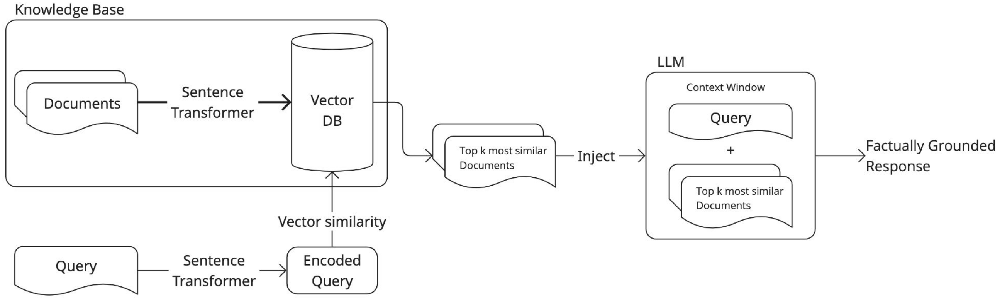

import pandas as pd
import torch
from sentence_transformers import SentenceTransformer
from transformers import pipelineChapter 5. RAG Pipeline for Automatic Text Classification
In this chapter, we will explore an alternative approach to text classification building a simple retrieval-augmented generation (RAG) system. This chapter will cover: * Building a knowledge base using official NACE category descriptions. * Retrieving the top_k relevant categories based on a natural language query. * Using a large language model (LLM) to make the final classification.

Phase 1 - Knowledge Base Creation
The first step in any RAG system is to build a knowledge base. > In the context of retrieval-augmented generation, a knowledge base is a structured collection of external information (e.g., documents, descriptions…) that can be searched and retrieved from. This is usually employed to ground LLM responses into factual information instead on relying solely on the model’s internal knowledge, or to augment the model with knowledge that was not available in the training set.
In order to build a knowledge base we need to: 1. Define what documents to store and how to structure them. 2. Embed the selected texts using a sentence-level embedding model (SentenceTransformer). 3. Store the embeddings in memory or in a vector database.
Defining and structuring documents
In our case, the knowledge base will be comprised by the NACE codes at the division level (2-digit). Therefore, the first step is to load the file containing all NACE codes and pre-process it.
nace_df = pd.read_excel("data/NACE_Rev2.1_Structure_Explanatory_Notes_EN.xlsx")Now, we can isolate the NACE divisions.
nace_division_df = nace_df[nace_df["ID"].str.len() == 2].reset_index(drop=True)
nace_division_df.head()As we can see, the dataset has multiple textual columns, like titles and descriptions (Includes, etc.). > In general, the more context we give to the embedding model the better, as long as the final text to embed doesn’t get too long.
A simple way to exploit the textual information present in the NACE dataset, is to include different textual features into a structured template, which we can call descriptor. In this setting, each NACE division will be associated to one descriptor, made of its title and further information present in the dataset.
codes = nace_division_df["ID"].tolist()
titles = nace_division_df["NAME"].tolist()
descriptions = nace_division_df["Includes"].tolist()
descriptor_template = "{title}.\n{description}"
descriptors = []
for title, description in zip(titles, descriptions):
descriptors.append(
descriptor_template.format(title=title.upper(), description=description)
)Let’s print one descriptor.
print(descriptors[5])These descriptors will be the actual text that will be embedded to create the knowledge base.
Embed the descriptors
Now that we built a descriptor for each of the 80+ NACE divisions, we need to embed them using a sentence-level embedding model. There are plenty of such models on Hugging Face. We can load them using the SentenceTransformer class from the sentence_transformers library.
For this example, we will use the lightweight multilingual paraphrase-multilingual-MiniLM-L12-v2 model from the S-BERT family. Since we need to match descriptions in French with NACE codes in English, it is important that our model can handle multiple languages.
MODEL_ID: str = "sentence-transformers/paraphrase-multilingual-MiniLM-L12-v2"
model = SentenceTransformer(MODEL_ID)After loading the model, we can embed the descriptors. Each descriptor will be embedded into a 384-dimensional embedding vector.
embeddings = model.encode(descriptors, convert_to_tensor=True)Since we only have 87 NACE divisions (and therefore 87 vectors), for the purpose of this tutorial we can keep the embeddings in memory without relying on vector databases.
Phase 2 - Searching the Knowledge Base
This phase consists in developing a method to search the knowledge base via semantic similarity. > When searching a knowledge base, a natural language query is embedded via the same model used to create the knowledge base and a distance metric is computed to evaluate the similarity between the query and the documents in the knowledge base.
The most popular distance metric used to retrieve elements from a knowledge base is cosine similarity, defined as: \[\cos (\theta)=\frac{\mathbf{A}\cdot \mathbf{B}}{||\mathbf{A}||||\mathbf{B}||}\] where \(\theta\) is the angle between the embedding vectors \(\mathbf{A}\) and \(\mathbf{B}\).
Now we can finally define a function that searches the knowledge base given a natural language query and retrieves the top_k most similar results.
def search_base(
query: str,
base: torch.Tensor,
embedding_model: SentenceTransformer,
top_k: int = 5
):
query_embedding = embedding_model.encode(query, convert_to_tensor=True)
cos_scores = torch.nn.functional.cosine_similarity(base, query_embedding)
top_results = torch.topk(cos_scores, k=top_k)
return top_resultsLet’s test the function with a sample query. We get both values (similarity scores) and indices as a result. In order to extract the corresponding NACE divisions, we can use the indices to filter the NACE dataframe.
sample_query = "Attività di estrazione mineraria."
top_results = search_base(sample_query, embeddings, model, top_k=5)
for i, sim in zip(top_results.indices, top_results.values):
code = nace_division_df.iloc[int(i)]["ID"]
title = nace_division_df.iloc[int(i)]["NAME"]
print(f"{code}: {title}\nSimilarity: {sim:.3f}\n")In theory, we could stop here and just pick the first result as our classification guess. However, a more robust approach involves an LLM judge to pick between the candidates.
Phase 3 - Final LLM Classification
This final stage comprises a generative large language model to pick an option between the retrieved candidate codes. First, we load the LLM via the Hugging Face pipeline wrapper.
LLM_ID: str = "meta-llama/Llama-3.2-3B-Instruct"
pipe = pipeline(
"text-generation",
model=LLM_ID,
torch_dtype=torch.bfloat16,
device_map="auto"
)System Prompt and Instructions
We need to define a system prompt, i.e., textual guidelines that will help the LLM follow our instructions, and the actual prompt template to parse the LLM input.
SYSTEM_PROMPT: str = """You are an economic activity classifier.
Based on a description, return ONLY the most fitting candidate without any additional text."""
PROMPT_TEMPLATE: str = """DESCRIPTION: "{query}"
CANDIDATES:\n{candidates}"""Parsing the Input
We need to extract the list of candidates using semantic-based similarity and parse it to make it understandable for the LLM.
sample_query = "Mining activities"
top_results = search_base(sample_query, embeddings, model, top_k=5)
candidates_list = []
for i, sim in zip(top_results.indices, top_results.values):
code = nace_division_df.iloc[int(i)]["ID"]
title = nace_division_df.iloc[int(i)]["NAME"]
candidates_list.append(f"{code} - {title}")
candidates = "\n".join(candidates_list)Let’s print the parsed prompt to visualize it.
parsed_prompt = PROMPT_TEMPLATE.format(query=sample_query, candidates=candidates)
print(parsed_prompt)Full RAG System
Now, we can test the full RAG system to classify the economic activity given a natural language query.
messages = [
{"role": "system", "content": SYSTEM_PROMPT},
{"role": "user", "content": parsed_prompt},
]
outputs = pipe(
messages,
max_new_tokens=32,
pad_token_id=pipe.tokenizer.eos_token_id
)
llm_out = outputs[0]["generated_text"][-1]["content"]
print(llm_out)Interactive Demo
Finally, we can create a small interactive demo for our RAG system. First, we need to create a rag function to perform the whole pipeline.
def rag(
query: str,
embeddings: torch.Tensor,
embedding_model: SentenceTransformer,
llm: pipeline,
system_prompt: str,
prompt_template: str,
nace_df: pd.DataFrame,
top_k: int = 5
):
top_results = search_base(query, embeddings, embedding_model, top_k=5)
candidates_list = []
for i, sim in zip(top_results.indices, top_results.values):
code = nace_df.iloc[int(i)]["ID"]
title = nace_df.iloc[int(i)]["NAME"]
candidates_list.append(f"{code} - {title}")
candidates = "\n".join(candidates_list)
parsed_prompt = PROMPT_TEMPLATE.format(query=query, candidates=candidates)
messages = [
{"role": "system", "content": system_prompt},
{"role": "user", "content": parsed_prompt},
]
outputs = pipe(
messages,
max_new_tokens=16,
pad_token_id=pipe.tokenizer.eos_token_id
)
return outputs[0]["generated_text"][-1]["content"]Now we can run the demo.
query = input("Entry a query ('EXIT' to stop): ")
while query != "EXIT":
output = rag(query, embeddings, model, pipe, SYSTEM_PROMPT, PROMPT_TEMPLATE, nace_division_df)
print(f"RESULT: {output}")
print("")
query = input("Entry a query ('EXIT' to stop): ")